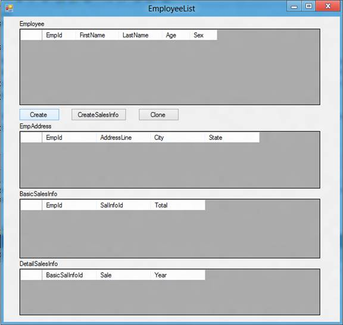

Deep clone the Entity objects using reflection [VB.NET-Visual Studio 2012]
How to deeply clone/duplicate the Entity objects using reflection (VBEFDeepCloneObject)
Introduction
This sample demonstrates how to deeply clone/duplicate entity objects using serialization and reflection.
Rather than a shallow copy that shares the same memory block between original object and the copied one, Deep copied objects do not depend on the original object's memory block.
Building the Sample
1. Please run the EFCloneDB.sql script on your Microsoft SQL Server. The EFCloneDB.sql is used to create four tables : Employee , EmpAddress, BasicSalesInfo and DetailSalesInfo. The relationship between Employee and EmpAddress is 1:1, relationship between Employee and BasicSalesInfo is 1:1, relationship between BasicSalesInfo and DetailSalesInfo is 1:N.
2. Please modify the connection string in the App.config according to your Microsoft SQL Server instance name.
Running the Sample
1． Show the Main Window.

2． Click Create button, in the new child window, create a new employee object.

3． Click the CreateSalesInfo button, in the launched window, add the employee sales information.

4． The employee information before you click the Clone button.

5． Click the Clone button, a new employee object and related information will be displayed.

Using the Code
1. Create an ADO.NET Entity Data Model
1) Name it EmpModel.edmx.
2) Set the connection string information of the EFCloneDB database.
3) Select all the data tables.
2. Create a static class DpCloneHelper used to define some extension methods for the Entity Framework's object EntityObject.
1) Create an extension method clone using serialization to implement the deep clone for an object whose the type is EntityObject.
''' <summary> ''' Extension method to Enitity Object. ''' Deeply clone the Object. ''' </summary> ''' <param name="source">Entity Object need to be cloned </param> ''' <returns>The cloned object</returns> <Extension()> _ Public Function Clone(Of T As EntityObject)(ByVal source As T) As T Dim ser As New DataContractSerializer(GetType(T)) Using stream As MemoryStream = New MemoryStream ser.WriteObject(stream, source) stream.Seek(0, SeekOrigin.Begin) Return DirectCast(ser.ReadObject(stream), T) End Using End Function
''' <summary> ''' Extension method to Enitity Object. ''' Deeply clone the Object. ''' </summary> ''' <param name="source">Entity Object need to be cloned </param> ''' <returns>The cloned object</returns> <Extension()> _ Public Function Clone(Of T As EntityObject)(ByVal source As T) As T Dim ser As New DataContractSerializer(GetType(T)) Using stream As MemoryStream = New MemoryStream ser.WriteObject(stream, source) stream.Seek(0, SeekOrigin.Begin) Return DirectCast(ser.ReadObject(stream), T) End Using End Function
2) Create the below methods to clear the Entity Reference on the cloned Entity. The cloned Entity will not be attached to the object until the Entity References are cleared. The cloned object should be treated as new data and should create new Primary Keys and associate with Referential Integrity.
''' <summary>
''' The Extension method will be used to clear the entity of object and all related child objects
''' </summary>
''' <param name="source">Entity Object need to be cleared</param>
''' <param name="bcheckHierarchy">This parameter is used to define whether to clear all the child object</param>
''' <returns></returns>
Private Function ClearEntityObject(Of T As Class)(ByVal source As T, ByVal bCheckHierarchy As Boolean) As T
If (source Is Nothing) Then
Throw New Exception("Null Object cannot be cloned")
End If
Dim tObj As Type = source.GetType
If (Not tObj.GetProperty("EntityKey") Is Nothing) Then
tObj.GetProperty("EntityKey").SetValue(source, Nothing, Nothing)
End If
If bCheckHierarchy Then
Dim PropertyList As List(Of PropertyInfo) = Enumerable.ToList(Of PropertyInfo)((From a In source.GetType.GetProperties
Where a.PropertyType.Name.Equals("ENTITYCOLLECTION`1", StringComparison.OrdinalIgnoreCase)
Select a))
Dim prop As PropertyInfo
For Each prop In PropertyList
Dim keys As IEnumerable = DirectCast(tObj.GetProperty(prop.Name).GetValue(source, Nothing), IEnumerable)
Dim key As Object
For Each key In keys
Dim childProp As EntityReference = Enumerable.SingleOrDefault(Of PropertyInfo)((From a In key.GetType.GetProperties
Where (a.PropertyType.Name.Equals("EntityReference`1", StringComparison.OrdinalIgnoreCase))
Select a)).GetValue(key, Nothing)
ClearEntityObject(childProp, False)
ClearEntityObject(key, True)
Next
Next
End If
Return source
End Function
''' <summary>
''' Clear the entity of object and all related child objects
''' </summary>
''' <param name="source">Entity Object need to be cleared</param>
''' <param name="bcheckHierarchy">This parameter is used to determine whether to clear all the child object</param>
''' <returns></returns>
<Extension()> _
Public Function ClearEntityReference(ByVal source As EntityObject, ByVal bCheckHierarchy As Boolean) As EntityObject
Return ClearEntityObject(source, bCheckHierarchy)
End Function
''' <summary>
''' The Extension method will be used to clear the entity of object and all related child objects
''' </summary>
''' <param name="source">Entity Object need to be cleared</param>
''' <param name="bcheckHierarchy">This parameter is used to define whether to clear all the child object</param>
''' <returns></returns>
Private Function ClearEntityObject(Of T As Class)(ByVal source As T, ByVal bCheckHierarchy As Boolean) As T
If (source Is Nothing) Then
Throw New Exception("Null Object cannot be cloned")
End If
Dim tObj As Type = source.GetType
If (Not tObj.GetProperty("EntityKey") Is Nothing) Then
tObj.GetProperty("EntityKey").SetValue(source, Nothing, Nothing)
End If
If bCheckHierarchy Then
Dim PropertyList As List(Of PropertyInfo) = Enumerable.ToList(Of PropertyInfo)((From a In source.GetType.GetProperties
Where a.PropertyType.Name.Equals("ENTITYCOLLECTION`1", StringComparison.OrdinalIgnoreCase)
Select a))
Dim prop As PropertyInfo
For Each prop In PropertyList
Dim keys As IEnumerable = DirectCast(tObj.GetProperty(prop.Name).GetValue(source, Nothing), IEnumerable)
Dim key As Object
For Each key In keys
Dim childProp As EntityReference = Enumerable.SingleOrDefault(Of PropertyInfo)((From a In key.GetType.GetProperties
Where (a.PropertyType.Name.Equals("EntityReference`1", StringComparison.OrdinalIgnoreCase))
Select a)).GetValue(key, Nothing)
ClearEntityObject(childProp, False)
ClearEntityObject(key, True)
Next
Next
End If
Return source
End Function
''' <summary>
''' Clear the entity of object and all related child objects
''' </summary>
''' <param name="source">Entity Object need to be cleared</param>
''' <param name="bcheckHierarchy">This parameter is used to determine whether to clear all the child object</param>
''' <returns></returns>
<Extension()> _
Public Function ClearEntityReference(ByVal source As EntityObject, ByVal bCheckHierarchy As Boolean) As EntityObject
Return ClearEntityObject(source, bCheckHierarchy)
End Function
More Information
ADO.NET Entity Framework
http://msdn.microsoft.com/en-us/library/bb399572.aspx
Serialization
http://msdn.microsoft.com/en-us/library/7ay27kt9.aspx
Reflection
http://msdn.microsoft.com/en-us/library/f7ykdhsy.aspx